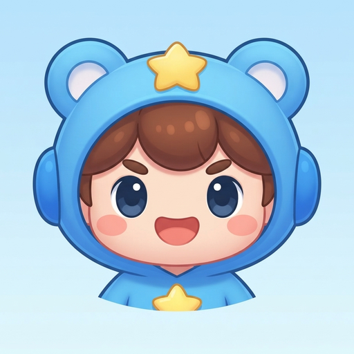

欢迎使用小智 AI
专为儿童与锁屏场景打造的语音伙伴，无需解锁平板也能随时聊天
🗣️ 语音关键词（最重要）
唤醒对话
「小智小智」
默认唤醒词。在「高级设置」里也可切换为「你好小智」「小智同学」或「全部」。
退出 / 保持静默
「小智退下」
随时打断并结束当前对话，让小智立刻回到待机静默状态。
小技巧：小智正在说话时，喊唤醒词可以打断它并继续提问；喊「小智退下」或点击屏幕上的红色「结束对话」按钮，则会彻底退出本轮对话。
👆 屏幕与开关说明
- 点击大表情：待机时点击直接开始对话；正在听你说话时点击可结束；小智说话时点击可打断并继续听。
- 免手触唤醒：开启后支持熄屏 / 锁屏状态下直接语音唤醒。
- 连续对话：开启后小智说完会自动继续听下一句，聊天更连贯。
环境很吵（比如旁边开着电视）时，如果小智容易被杂音触发一直插话，建议暂时关闭底部的「连续对话」，或直接对它说「小智退下」。
🔋 家长必看：锁屏保活与电量提醒
- 开启锁屏保活：在激活页或「高级设置 → 开启锁屏保活」中关闭电池优化，防止平板锁屏后系统杀掉后台录音服务。
- 低电量语音提示：即使在熄屏待机状态下，当电量降到 20%、10%、5% 时，小智会用较慢的语速离线语音提醒「请充电」。